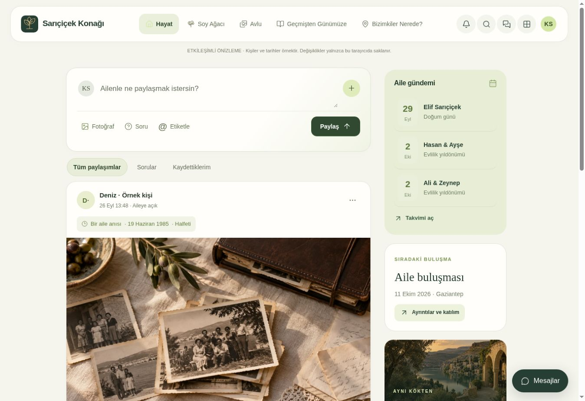
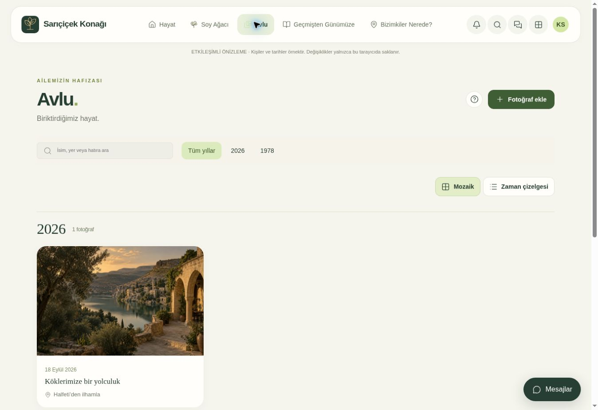
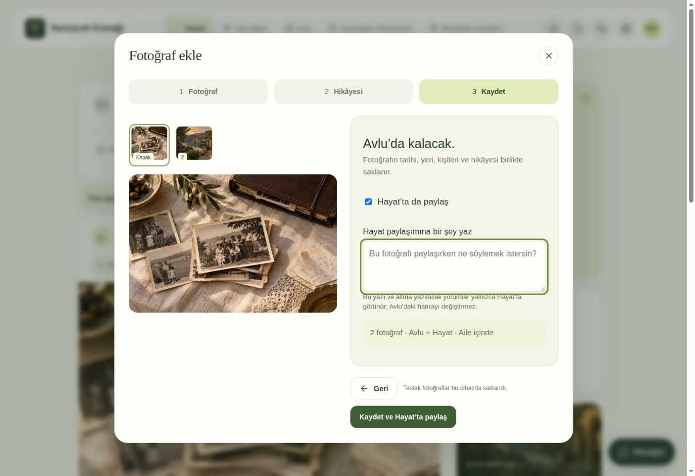
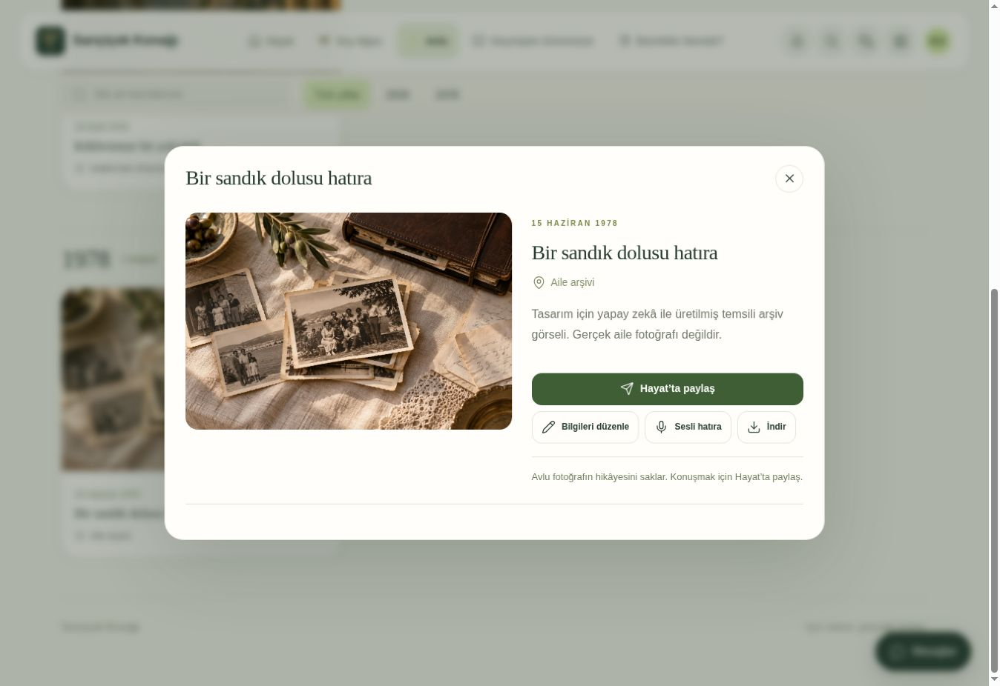
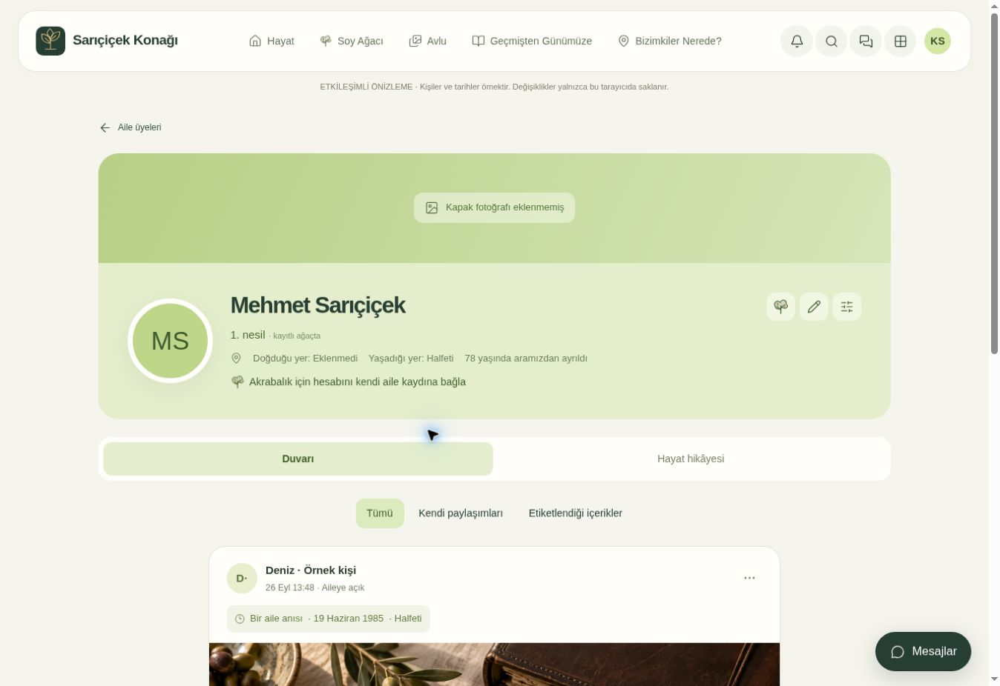

1 · Yaz ve Paylaş
“Ailenle ne paylaşmak istersin?” kutusuna yaz. Paylaş düğmesi yazını aile akışına gönderir. Birini etiketlemen gerekmez; aile üyelerinin paylaşımları burada görünür.
Hayat, Avlu, soy ağacı ve mesajlar. Düğme düğme, adım adım.
Ekran görüntüleri örnek kişilerle hazırlanmıştır; gerçek aile kayıtları değildir.

“Ailenle ne paylaşmak istersin?” kutusuna yaz. Paylaş düğmesi yazını aile akışına gönderir. Birini etiketlemen gerekmez; aile üyelerinin paylaşımları burada görünür.
Bir şey yaz, Fotoğraf ekle veya Bir soru sor seçeneklerini açar. Etkinlik ve Anı seçeneği bu menüde yoktur. Sorunun cevapları aynı paylaşımın altında toplanır.
Yazında veya yorumunda @ yaz. İsim ya da lakapla ara; listeden kişiyi seç. Klavyede oklarla ilerleyip Enter ile seçebilirsin. Etiketteki çarpı bağlantıyı kaldırır.
Beğen tepkini ekler; tekrar dokunursan kaldırır. Alttaki kutuya yorum yazıp okla gönder. Yorum düğmesi konuşmanın tamamını açar. Kaydet, paylaşımı kendi Kaydettiklerim listene ekler.
Kendi paylaşımını düzenle, kaldır veya bağlantısını kopyala. Kaldırdıktan sonra ekrandaki Geri al düğmesi beş dakika çalışır. Bağlantıyı yalnızca o kayda erişebilen aile üyeleri açabilir.
Üst bardaki zil, etiketlemeleri ve paylaşımlarına gelen cevapları gruplar. Bildirim tercihleriyle görmek istediğin başlıkları seç. Özel mesajların ayrı Mesajlar bölümündedir.

Fotoğraflar çekim tarihine göre, yeniden eskiye sıralanır. Yıllardan birine dokun; Tüm yıllar filtreyi kaldırır. Tarihi bilinmeyen eski kayıtlar açıkça belirtilir.
Mozaik fotoğrafları yan yana gösterir. Zaman çizelgesi yıllar boyunca tek sıra hâlinde gezmeyi sağlar. Sayfa sonundaki Daha eski fotoğraflar önceki kayıtları yükler.
Burada fotoğrafın hatırası ve önemi saklanır. Günlük paylaşım yazısı ve konuşmalar Hayat’a aittir. Avlu’ya aynı dosyanın ikinci kopyasını yüklemen gerekmez.
Avlu kutusu yüklenmiş fotoğraflarda arar. Üst bardaki büyüteç, sunucudaki erişebildiğin arşiv ve Hayat paylaşımlarında arar; özel mesajları içermez.

Bu kutuyu seçince “Hayat paylaşımına bir şey yaz” alanı açılır. Yazın yalnızca akışta görünür. Fotoğrafın kalıcı hatırasından ayrıdır; altına gelen yorumlar da Avlu’ya eklenmez.
Küçük fotoğraflara dokunarak her birini düzenle. “Bu bilgileri diğer fotoğraflara uygula” tarih, yer, kişiler ve hikâyeyi kopyalar; sonra her kareyi ayrı değiştirebilirsin. Oklar sırayı, Kapak yap albümün ilk karesini değiştirir.
Bir kişi seçip fotoğraftaki yerine dokun. İşaret, onun profiline gider. İşareti kaldırmak için üzerine tekrar dokun. Çöp simgesi arşiv kaydını değil, henüz yüklemediğin seçimi kaldırır.
Dört zorunlu bilgiden biri eksikse kayıt yapılmaz; ilgili fotoğraf açılır. Yazı ve fotoğraf taslakları bu cihazda tutulur. Yeniden açtığında taslağa devam edebilirsin.

| Düğme | Ne yapar? |
|---|---|
| Kişi adı / fotoğraftaki işaret | O kişinin profilini açar. |
| Hayat’ta paylaş | Aynı fotoğrafı bir yazıyla aile akışına taşır; yeni dosya kopyası oluşturmaz. |
| Bilgileri düzenle | Fotoğraf sahibi veya yetkili moderatör tarih, yer, kişiler ve hikâyeyi düzeltir. |
| Düzeltme öner | Diğer üyeler bilgi önerisi gönderir. Kabul edilmeden asıl kayıt değişmez. |
| Fotoğrafın ayrıntıları | Varsa fotoğrafı çeken kişi ve kaynağı açar. |
| Sesli hatıra | İzin verdiğinde en fazla üç dakika ses kaydeder. Durdur, dinle ve kaydet. Ses dosyası da seçebilirsin. |
| İndir / çarpı | Fotoğrafı cihazına indirir veya pencereyi kapatıp bulunduğun yere döner. |

Kapak ve profil resmi, isim, lakap, nesil ve sana göre akrabalık bilgisi birlikte görünür. Akrabalık hesabı için yönetici hesabını soy ağacındaki doğru kişiye bağlamalıdır; eksik bağ tahmin edilmez.
Ağaç simgesi kişiyi ağaçta gösterir. Kalem, yetkin varsa kişi kaydını düzenler. Ayar simgesi profil resmi, kapak ve ayrıntıları açar. Mesaj simgesi o kişinin bağlı hesabına özel konuşma açar.
Duvarı, kişinin paylaşımlarıyla kendi veya etiketlendiği fotoğraf ve yorumları toplar. Tümü, Kendi paylaşımları ve Etiketlendiği içerikler filtreleri korunur. Hayat hikâyesi, biyografisini açar.
İsim veya lakapla birini bul. Kartına dokununca profilini açabilir veya yalnızca yakınlarına odaklanabilirsin. Ağaç kaydırılarak gezilir. + / − yakınlaştırır ve uzaklaştırır; köşeli simge ağacı ekrana sığdırır.
Kuşaklar yatay sıralardadır. Yeşil çizgi ebeveyn–çocuk bağını, açık renk çizgi eş bağını, kesikli yeşil çizgi evlat edinme bağını gösterir. Büyük ailelerde bir görünümde en fazla 120 kişi bulunur; arama her kayıtlı kişiye ulaşır.
Bilgisayarda sağ alttaki Mesajlar düğmesinden birini seç. Küçük pencere akışta gezinirken açık kalır. Telefonda alt menüdeki Mesajlar bölümünü kullan. Yeni grup ile istediğin kişilerle ayrı konuşma açabilirsin.
Mesaj metninde ara yalnızca kendi birebir ve üyesi olduğun grup konuşmalarını tarar. Aile arşivi aramasından ayrıdır. Ataç dosya ekler, ok gönderir; pencerenin eksi simgesi küçültür, çarpı kapatır.
Hesabım içinden aç. Yazılar ve dokunma alanları büyür. Aynı yerden kapatabilirsin. Tercihin hesabına ve bu cihaza kaydedilir.
Taslağın cihazda kalır. İnternet geri gelince yazını kontrol edip kendin Paylaş veya Kaydet’e dokun. Uygulama bağlantı gelince kendiliğinden göndermez. Oturumu kapatmak bu cihazdaki taslakları temizler.
Hayat · Avlu · + · Soy ağacı · Mesajlar. Takvim ve diğer bölümler üstteki Tüm bölümler menüsündedir.
Yönetimde onay bekleyen fotoğraf ve olayları incele. İnceleme merkezi, fotoğraf bilgisi önerilerine, arşiv katkılarına ve mesaj şikâyetlerine ulaşır.
Yeni Hayat ve Avlu kayıtları aile içinde paylaşılır. Kitle seçme veya paylaşım grubu yoktur; gruplar mesajlaşma içindir. Önceden özel kaydedilen içeriklerin ve veli kontrolündeki çocuk profillerinin erişim sınırları korunur.
Telefon bildirimi cihaz iznine bağlıdır; mesaj metni kilit ekranına yazılmaz. Diğer bildirim başlıkları uygulama içinde görünür.
İndirilen HTML bir önizlemedir. Örnek verilerle çalışır. Oradaki değişiklikler ailenin ortak kayıtlarına gönderilmez. Gerçek kayıtlar için canlı uygulamayı aç.